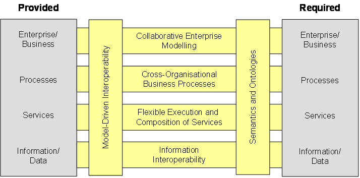

")

Overview of the AIF
What is an interoperability framework?
A framework is a structure for supporting or enclosing something else, especially a skeletal support used as the basis for something being constructed. An interoperability framework provides a set of assumptions, concepts, values and practices that constitutes a way of viewing and addressing interoperability issues. The ATHENA Interoperability Framework (AIF) provides a compound framework and associated reference architecture for capturing the research elements and solutions to interoperability issues that address the problem in a holistic way by inter-relating relevant information from different perspectives of the enterprise.
Structure of the AIF
The ATHENA Interoperability Framework (AIF) is structured into three parts:
- Conceptual integration which focuses on concepts, metamodels, languages and model relationships. The framework defines an interoperability reference architecture that provides us with a foundation for systemising various aspects of interoperability.
- Applicative integration which focuses on methodologies, standards and domain models. The framework defines a methodology framework that provides us with guidelines, principles and patterns that can be used to solve interoperability issues.
- Technical integration which focuses on the software development and execution environments. The framework defines a technical architecture that provides development tools and execution platforms for integrating processes, services and information.
Interoperability reference architecture
The interoperability reference architecture relates the solution approaches coming from the three different research areas of ATHENA, namely enterprise modelling, architectures and platforms, and ontology. The figure below illustrates the reference architecture that focuses on the provided and required artefacts of two collaborating enterprises. Interoperations can take place at the various levels (enterprise/business, process, service and information/data). For each of these levels we prescribe a model-driven interoperability approach where models are used to formalise and exchange the relevant provided and required artefacts that must be aligned and made compatible through negotiations and agreements.

Collaborative enterprise modelling concerns the exchange and alignment of knowledge models for describing the processes, organisations, products and systems in the collaboration context. Modelling of cross-organisational business processes focuses on defining process views that describes the interactions between two or more business entities. Flexible execution and composition of services is concerned with identifying, composing and executing various applications. Information interoperability is related to management, exchange and processing of different documents, messages and other information structures.
To overcome the semantic barriers which emerge from different interpretations of syntactic descriptions, precise, computer processable meaning must be associated with the models expressed on the different levels. It has to be ensured that semantics are exchangeable and based on common understanding in order to enhance interoperability. This can be achieved using ontologies and an annotation formalism for defining meaning in the exchanged models.
Interoperability methodology framework
The AIF also provides an associated methodological framework, the ATHENA Interoperability Methodology (AIM), which describes the approach towards interoperability from the decision to evaluate collaboration until solution maintenance, and the reference guidelines for the adoption of the reference architecture. In the figure below the AIM is rendered from an overall perspective, showing the essential structure of phases and disciplines. The phases of an interoperability project life-cycle are represented by the columns. The rows in the figure outline the set of principles that characterise the mature approach for the definition, creation, operation and termination of an interoperability project. An interoperability discipline is a group of activities within a specific interoperability field which are logically grouped together. Within each discipline, the AIM recommends sets of activities to be performed in the different phases of the interoperability project.
Interoperability profiles
Profiles are a way to structure the complex relationships between the individual research results, scenario and the ATHENA Interoperability Framework. Based on the domain and industry sector specific standards, the business needs and the selected interoperability scenarios of an enterprise, an interoperability profile can be defined to ease the interoperability efforts for the enterprise by being valuable and applicable in the described scenarios. An interoperability profile defines a set of results or specifications that work together. It consists of interoperability guidelines, specifications, and integrated and configured solutions from the conceptual, applicative and technical parts of the AIF.
The concept of an interoperability profile was initially defined when preparing the description of work of the ATHENA project [ATHENA 2003], on basis of a categorisation per application domains (initially Supply Chain Management, Product Portfolio Management, Collaborative Product Development, and e-Procurement) and industry sectors (initially Automotive, Aerospace, Furniture and Telecommunication). The initial aim was to create four ATHENA Interoperability Profiles (AIPs) for the selected scenarios covering the application domains.